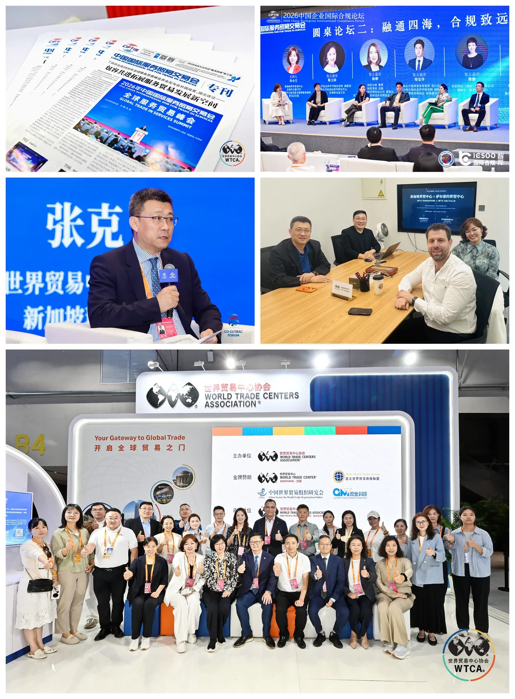

2026 年 9 月 11 日下午，北京首钢国际会展中心。“共信共福 千帆共济”——2026 中国企业走出去论坛暨走出去综合服务生态伙伴大会在此举行。新加坡世界贸易中心理事长、贝克资本集团董事长张克受邀出席，现场见证并完成“走出去全球生态合作伙伴”签约，并在高端对话中分享了他对中国服务贸易企业出海的一线观察。这是新加坡世界贸易中心借服贸会舞台，向中国企业递出的一张“全球网络名片”。
01 群贤毕至｜一场聚焦中国企业高质量出海的行业盛会
论坛由中国企业走出去联盟主办。联合国前副秘书长沙祖康、北京市副市长唐文弘、中国企业走出去联盟主席程瀚文出席开幕式并致辞；原国家外经贸部副部长、博鳌亚洲论坛原秘书长龙永图，中国贸促会研究院院长赵萍等嘉宾先后发表主旨演讲，围绕高质量发展、全球供应链、文化出海等议题，为中国企业全球化把脉支招。论坛同期发布走出去综合服务平台新版、走出去系列丛书、全球非遗展、走出去商学院、走出去基金一期等重磅成果，一个覆盖出海全链条的综合服务生态正在加速成型。

02 重磅签约｜新加坡世界贸易中心成为“走出去”全球生态合作伙伴
在成果发布与战略签约环节，新加坡世界贸易中心正式成为“走出去全球生态合作伙伴”。张克理事长代表新加坡世界贸易中心完成签约，将世界贸易中心协会（WTCA）覆盖全球的成熟商业网络接入国内出海服务体系，与中国企业走出去联盟及各方生态伙伴携手，共同为中国企业搭建走向全球市场的服务通道。


03 高端对话｜张克：信任是根本，以网络对接网络
在“服务贸易企业走出去发展趋势”高端对话中，中国驻埃及原公使衔经商参赞韩兵向张克提问：中国服务贸易企业出海，在商务对接、本土信任建立上最缺的是什么？又如何借助全球网络少走弯路？
新加坡世贸理事长张克首先指出一个常被忽视的事实：中国是货物贸易的巨大出口国，同时也是全球第二大服务贸易进口国，“货物的出口和服务的出口非常不均衡”；而老牌贸易强国英国，已是全球服务贸易第二大出口国。

在他看来，造成这种不均衡的根本原因，是全球贸易底层逻辑的变化——过去更多靠货物流转与关税套利，今天则需要资本、创新与市场的深度结合。“要想做到这一点，就需要更快、更广泛地建立链接，建立可信任的链接。”
“信任是根本。”张克强调，企业从零开始搭建海外网络，成本高、周期长、并不现实；而世界贸易中心协会在全球 90 多个国家、320 个城市均设有世贸中心，孕育着 100 多万家优质企业会员。因此，最好的方式不是另起炉灶，而是“以网络对接网络”，快速建立超级链接——这正是新加坡世界贸易中心与贝克资本能够为中国出海企业提供的核心价值。
04 关于新加坡世界贸易中心
新加坡是全球金融、国际贸易与创新枢纽。作为世界贸易中心协会在新加坡的成员机构，新加坡世界贸易中心立足三大业务板块——WTC ONE Club 高端商务俱乐部、GlobalX 出海加速器、WTC FUND 国际投资基金，打通资本、产业与创新资源，为中国企业提供本地化信任背书、海外商务对接、跨境投融资与市场落地的一站式支持。
从“走出去”到“走进去、走得稳”，新加坡世界贸易中心愿以全球网络对接中国力量，助力更多企业少走弯路、扬帆远航。
